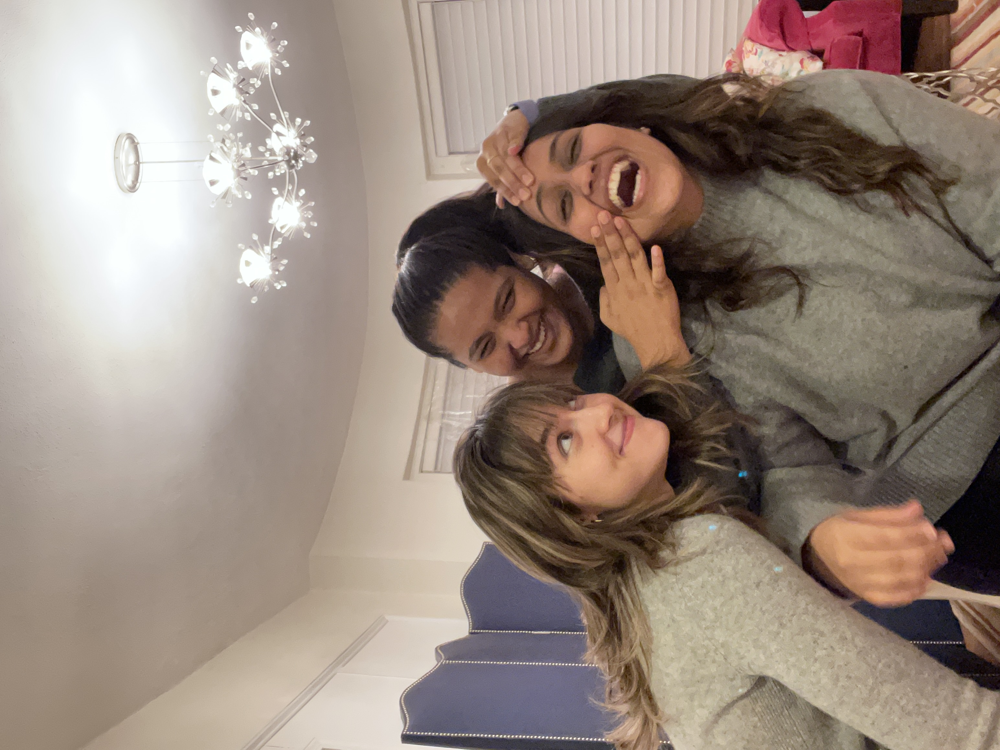
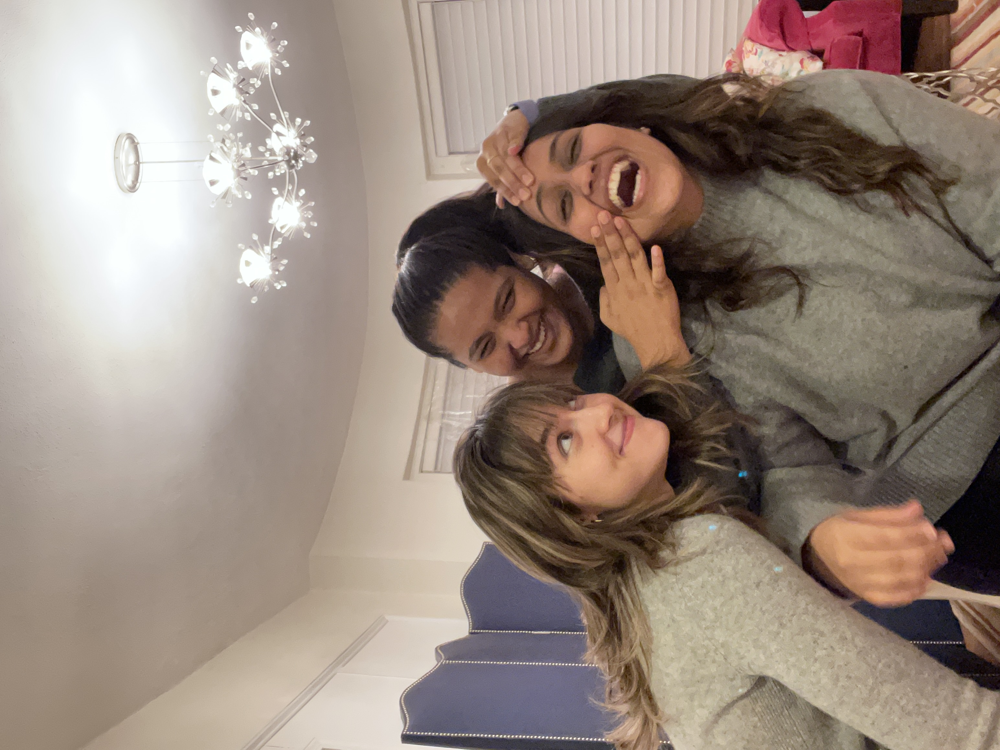

Sometimes I catch myself in a moment, watching the sunset paint the Charles River in golden hues, or laughing with friends over homemade pasta and then I realize, these are the days I'll look back on. These are the best days of my life.
Boston wasn't always home. I arrived here for my master's in data science with the usual mix of excitement and nerves that comes with new beginnings. But this city, with its cobblestone streets and academic energy, quickly became more than just a place to study.
I live right in the heart of the city (Thanks to my Indian parents, who pay the rent). My apartment sits perfectly positioned where I can walk to the Charles within minutes. Some evenings, when code and algorithms have filled my brain to capacity, I stroll down and watch the sun melt into the horizon. There's something about watching the rowing teams glide across the water while the sky turns pink that puts everything into perspective. I continue to remind myself, these are the best days to my life.
On nights when the weather is perfect, you might find me by the reflection pool, soaking in the city lights mirrored in still water. It's my favourite spot in the city. Boston has a way of feeling both bustling and peaceful at once.
Mornings, now begin with a ritual. Sometimes it's bagel and coffee from Pavements, other days it's a latte from Starbucks when I'm late for class. Weekends usually come with a shakshuka and a pastry at Tatte that fuels my coding sessions. These small pleasures ground me in the present.
Home is more than just an address when you like the people you live with. I've somehow lucked into living with the kind of roommates people write sitcoms about. Our sushi nights have become a sacred tradition, amateur attempts at rolls that sometimes fall apart but always lead to laughter. We've created the kind of space where friends gather naturally, where everyone feels welcome.
Beyond my apartment, I've found my people. For me, it is weird to say. For the first time, it feels like, I have a tribe. Friends from classes who understand the unique pain of debugging at 2 AM. Friends outside university who show me parts of Boston I would never discover in a guidebook. Our weekends blur together in the best possible way, game nights that get competitive, cooking experiments that occasionally set off smoke alarms, house parties where someone always insists on playing DJ (Bollywood songs for the most part).
Sometimes we dress up and hit the clubs, dancing until our feet hurt (I often joke that I'm over my clubbing days aka too old for it). Other nights, we find neighbourhood restaurants and linger over dinner conversations that jump from data ethics to dating disasters.
It hurts but I know these days won't last forever. Soon enough, we'll graduate and scatter to different cities, pursuing careers and new adventures. The river will still flow, but I won't be there to watch it. Someone else will occupy my favourite table at Pavements. We wouldn't have the competitive energy in board games.
But that's exactly why these are the best days. Because they're happening right now, because they're temporary, because I'm awake enough to recognize them while I'm living them.
I'm living the best days of my life.
 
